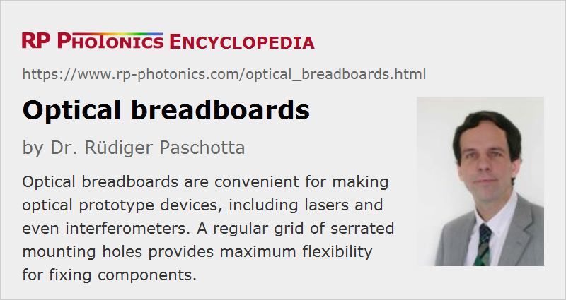

Optical Breadboards
Definition: portable platforms for optical prototyping and for mounting modules on optical tables
German: Lochplatten
How to cite the article; suggest additional literature
Author: Dr. Rüdiger Paschotta
Optical breadboards are flat platforms which usually contain a regular grid of threaded mounting holes for fixing various types of optical mounts or posts. Compared with optical tables, they are smaller in terms of area and particularly in terms of thickness.
The top plate, containing the threads, usually consists either of stainless steel (ferromagnetic, suitable for magnetic clamps) or of aluminum and has a thickness around 3 to 5 mm. It should exhibit a high degree of flatness, e.g. ±0.1 mm over one square meter. The core usually consists of a honeycomb lattice, often made of steel, which can be highly stable without being enormously heavy. Note that it is essential for many applications that such a breadboard is very stiff. By using a dense plate material with a high velocity of sound, one obtains high resonance frequencies. A breadboard should also exhibit well damped mechanical resonances – ideally, with critical damping for a wide range of resonances. For that purpose, additional polymer materials may be used as dampers – also for sealing the holes, such that a small part falling into a hole is not lost.
There are also solid aluminum or steel plates with a grid of holes, which are substantially cheaper, but are inferior in various respects (e.g. rigidity and vibration control); they are suitable for simple demonstrations, but normally not for lasers or interferometers. For those, one should chose a scientific grade or precision grade board. Industrial grade breadboards are intermediate in terms of quality and can be used for not particularly critical experiments.
While solid breadboards tend to be quite heavy particularly when consisting of steel, honeycomb structures allow for more lightweight constructions which are still quite stable. There are ultra-lightweight constructions for special applications.
Boards with metric or imperial grid spacing are available; common spacings are one inch (25.4 mm, imperial units) and 25 mm (metric), or one half of those values. Standard threads are M6 and 1/4“-20; the latter means 1/4 inch major diameter and 20 threads per inch according to the Unified Thread Standard.
For effective vibration control, an optical breadboard should be equipped with suitable damping mounts. However, there is usually not as much space available below an optical breadboard, compared with an optical table, and much shorter mounts may not provide equally effective suppression of vibrations as e.g. the common pneumatic isolators used with optical tables.
Applications of Optical Breadboards
Breadboard are very suitable for making prototype devices, because it is easy to stably mount a wide range of components but also to move or remove them as necessary. One may directly fix an optical mount on a breadboard, but frequently one uses a post in between them, which also gives some flexibility concerning the height. Note, however, that higher posts generally lead to reduced mechanical stability.
Sometimes, an optical breadboard is mounted at some height above an optical table. This can be useful in situations where one needs to avoid excessively high posts. Also, it can be highly convenient to retain the option of moving a whole sub-assembly (e.g. a laser or diagnostic setup) without losing its internal alignment.
Even some industrial devices are based on an optical breadboard, possibly integrated in some housing. At least for small production volumes, that approach may be sensible – particularly when some amount of flexibility should remain for the user.
For permanent installations, such as industrial lasers, one may use other solutions – for example, custom-made base plates containing mounting features at specific locations rather than a regular grid of holes. These can be cheaper in mass production and also mechanically more stable, but on the other hand much less flexible.
Suppliers
The RP Photonics Buyer's Guide contains 20 suppliers for optical breadboards. Among them:
Questions and Comments from Users
Here you can submit questions and comments. As far as they get accepted by the author, they will appear above this paragraph together with the author’s answer. The author will decide on acceptance based on certain criteria. Essentially, the issue must be of sufficiently broad interest.
Please do not enter personal data here; we would otherwise delete it soon. (See also our privacy declaration.) If you wish to receive personal feedback or consultancy from the author, please contact him e.g. via e-mail.
By submitting the information, you give your consent to the potential publication of your inputs on our website according to our rules. (If you later retract your consent, we will delete those inputs.) As your inputs are first reviewed by the author, they may be published with some delay.
See also: optical tables, opto-mechanics
and other articles in the category general optics
|  |
If you like this page, please share the link with your friends and colleagues, e.g. via social media:
These sharing buttons are implemented in a privacy-friendly way!